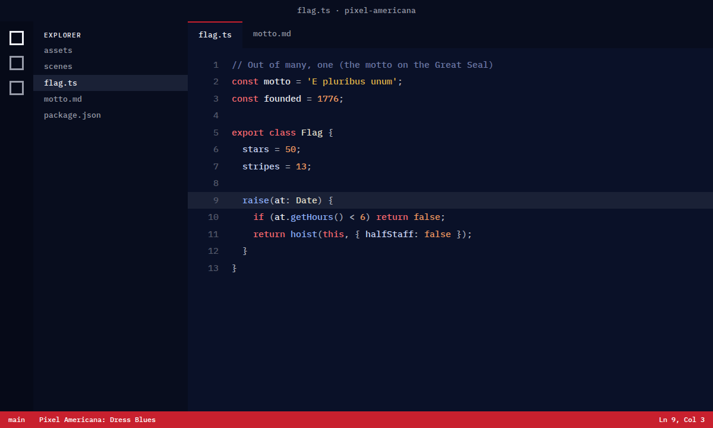
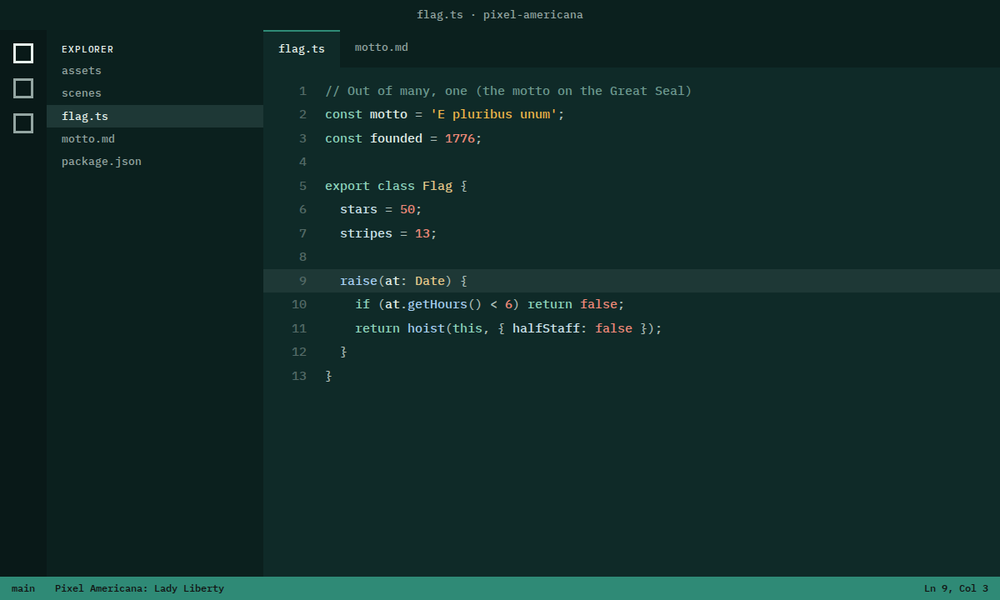
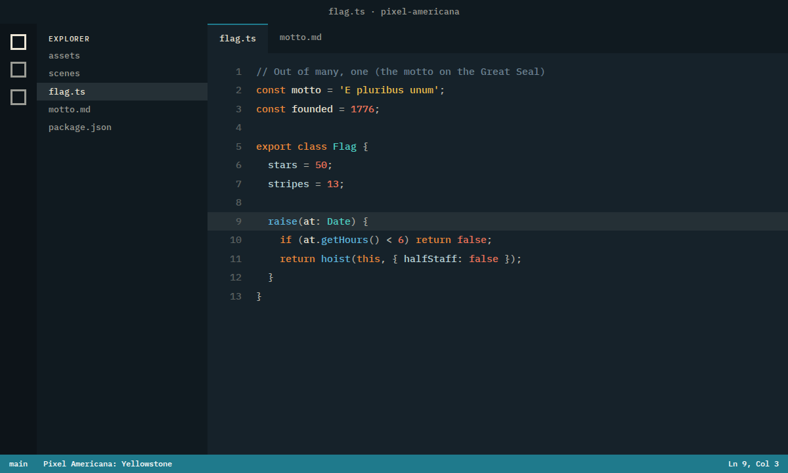
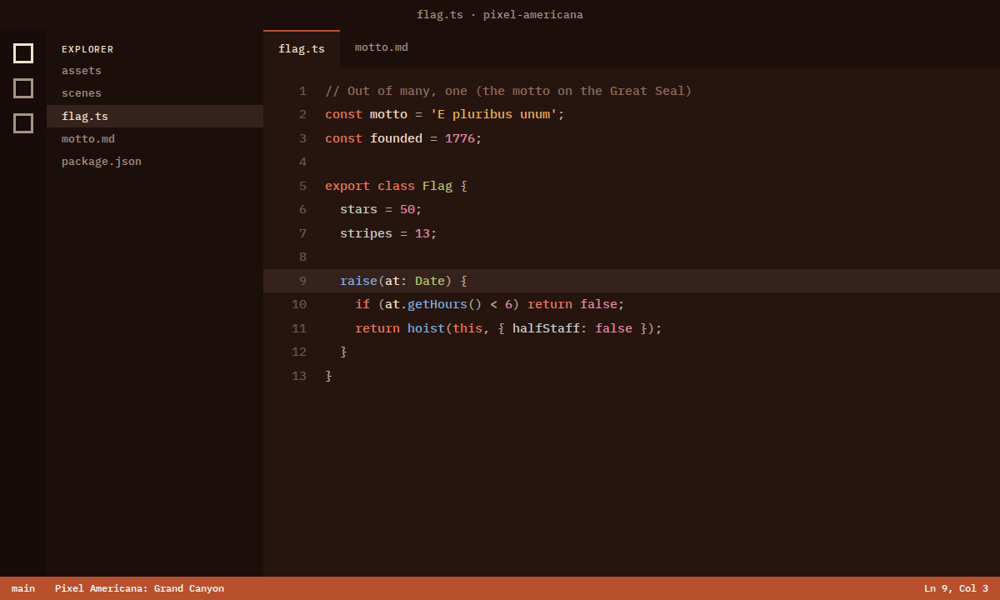
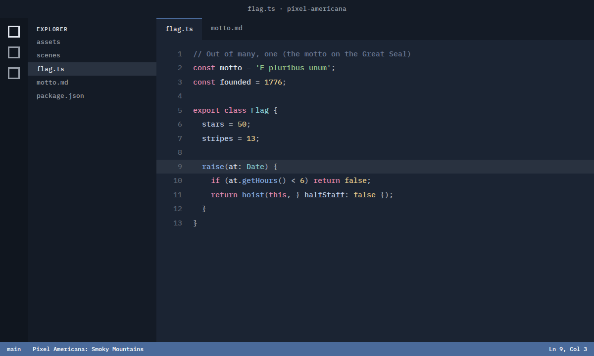
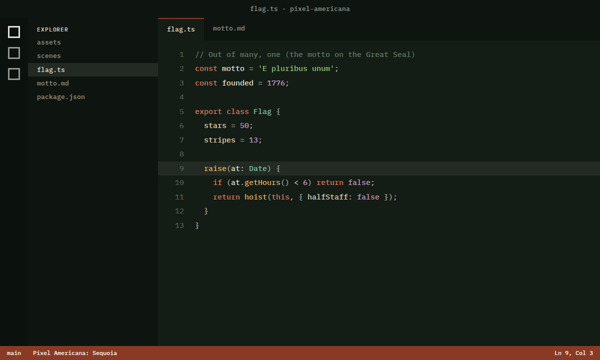
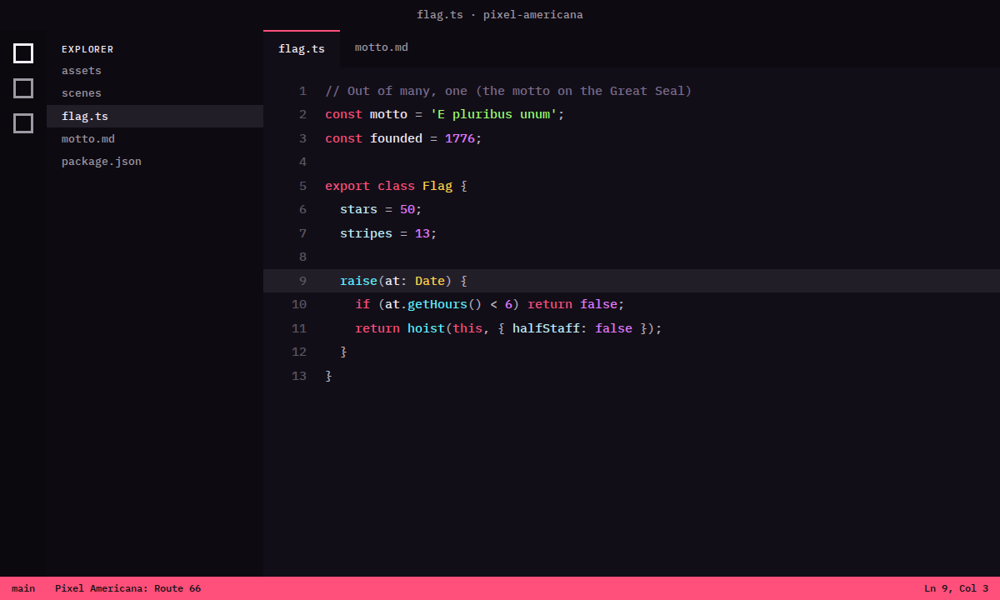
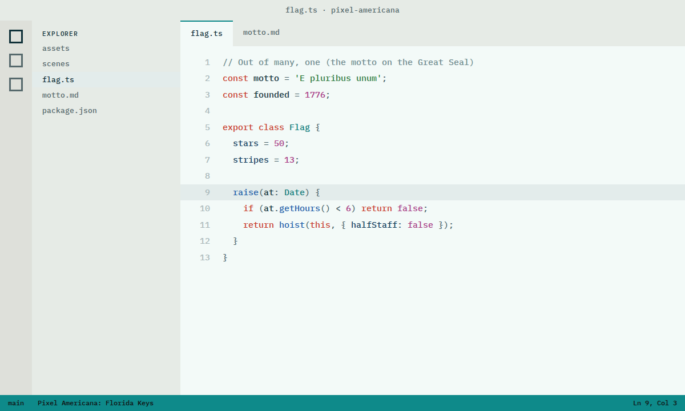

VS Code themes
For your code editor
10 American color themes for Visual Studio Code, Cursor and VSCodium, from Old Glory navy to Yellowstone and the Grand Canyon, two of them light. Every code color has at least 4.5:1 contrast with the background, comments at least 3:1, and the built-in terminal uses the matching terminal theme.
 Old Glory DarkNight-sky navy, flag red, finial gold.
Old Glory DarkNight-sky navy, flag red, finial gold.
Dress Blues DarkMidnight navy, scarlet and brass, like the uniform.
Lady Liberty DarkCopper-green patina with a torch-gold flame.
Yellowstone DarkGrand Prismatic: pool blue, sulfur yellow, the orange ring, on basalt.
Grand Canyon DarkRim-to-river: rust walls, sandstone light, a thread of blue.
Smoky Mountains DarkBlue ridges fading into haze, rhododendron pink, laurel green.
Sequoia DarkDeep forest floor, redwood bark, fern and moss, a shaft of sun.
Route 66 DarkMotel neon on a desert night: hot pink, cyan, lime. Parchment LightIron-gall ink on laid paper, sealing-wax red. A light theme.
Parchment LightIron-gall ink on laid paper, sealing-wax red. A light theme.
Florida Keys LightShallow-water turquoise, coral, sun-bleached sand. A light theme.
Install
- Download the
.vsixfile. - In VS Code, open the Extensions view, click the … menu › Install from VSIX… and pick the file.
- Run Preferences: Color Theme (Cmd/Ctrl+K then Cmd/Ctrl+T) and choose a Pixel Americana theme.